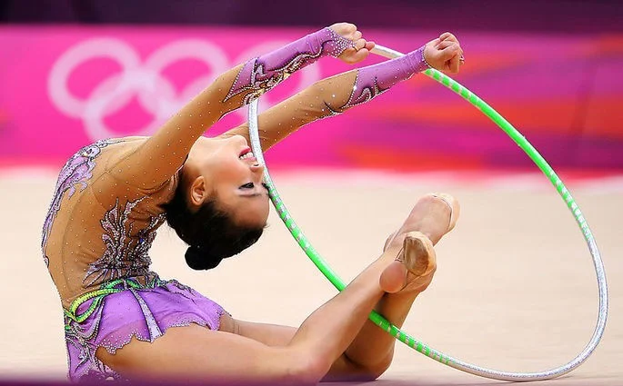
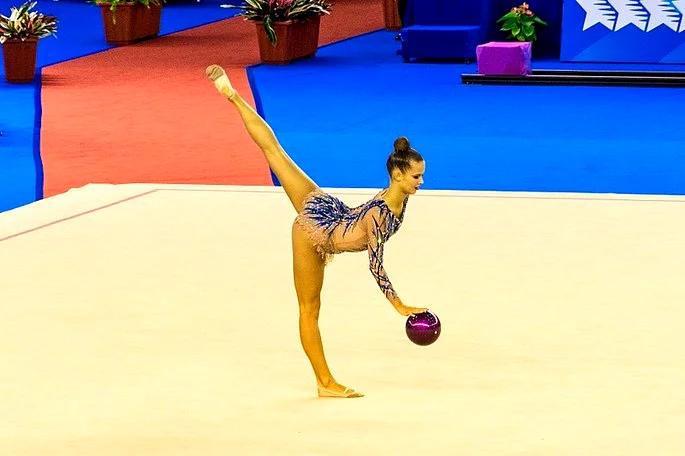
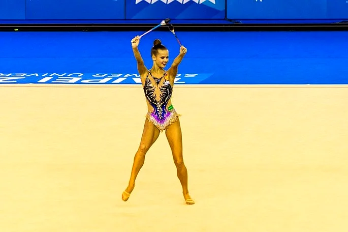
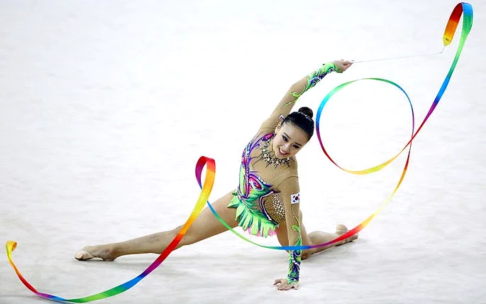
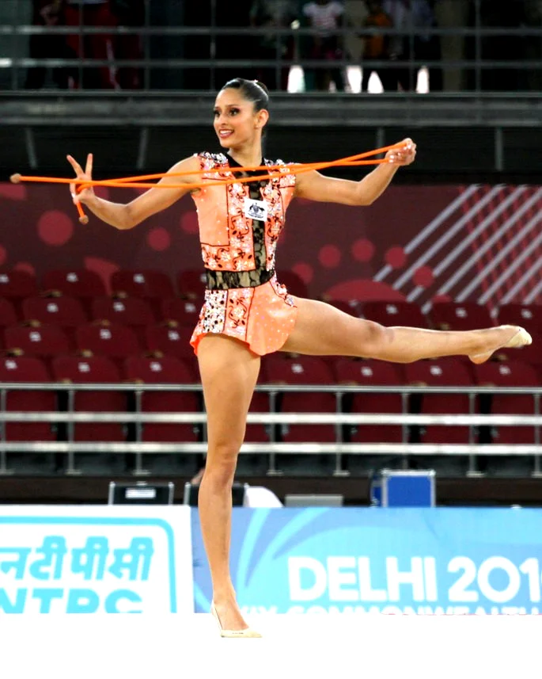

Elementos da ginástica rítmica: aparelhos utilizados
Aparelho arco
O arco é o aparelho utilizado na apresentação de saltos e pivots, por exemplo. O material utilizado deve medir entre 80 e 90 cm de diâmetro, além do peso mínimo de 300 gramas.
Aparelho bola
A Bola, fabricada em material de borracha, utilizada na ginástica rítmica, deve ser apresentada nos exercícios de flexibilidade e ondas, com um diâmetro de 18 a 20 cm e peso mínimo de 400 gramas.
Aparelho maças
As duas maças são utilizadas na execução de movimentos que envolvam equilíbrio. As especificações técnicas deste aparelho são: cada maça deve ter entre 40 e 50 cm, além de pesar no mínimo 150 gramas.
Aparelho fita
O aparelho fita é composta por duas partes: a fita, no qual deve ter pelo menos 6 metros, com largura de 4 a 6 cm, e pesar no máximo 35 gramas. A segunda parte é o estilete: a fita deve ser presa a um estilete com 50 a 60 cm de base e no máximo 1 cm de diâmetro.
Aparelho corda
A corda é utilizada para desenvolver, predominantemente, com o exercício de salto. O material desse aparelho pode ser de sisal ou sintético, com comprimento compatível à altura da ginasta.
